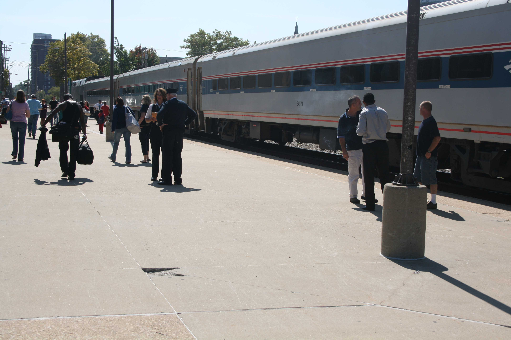
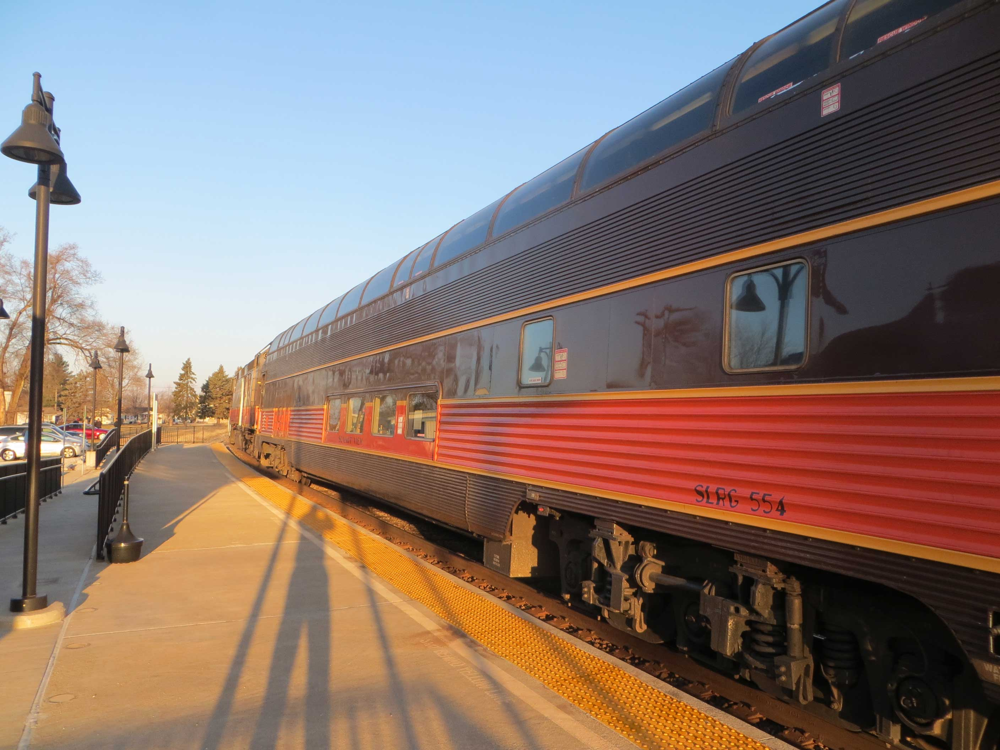
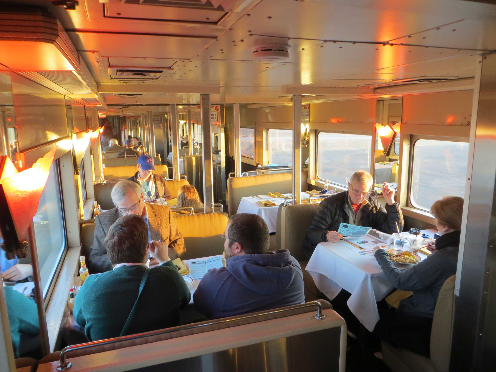

Today Amtrak resumes full operation of the Hoosier State, ending an 18-month experiment in which Iowa Pacific proved rolling stock and on-board services. I had an opportunity to take this unusual train in June 2016 while on a business trip to Indianapolis. What follows are my notes on the experience.
Aboard the Hoosier State
We’ve just wrapped up the CLAMP’s Hack/Doc Fest at Butler University in Indianapolis, Indiana. You can read Ken Newquist’s daily updates to see how the conference went, including all the gory details on the updated annotation in Moodle 3.1. Short version: it needs love. I’d like to talk about a most unusual aspect of the conference: Amtrak and Iowa Pacific’s Hoosier State, which runs between Chicago and Indianapolis.
Background

Train service between Chicago and Indianapolis has a tortured history in the Amtrak era. Amtrak does not, except in a few cases, own its own track, and must therefore rely on access to rails owned by private freight companies. The most direct routes to Indianapolis were abandoned or downgraded in the 1970s and 1980s as freight traffic moved elsewhere. Amtrak trains which serve Indiana have repeatedly moved to less desirable routes in order to maintain service.
By the 2010s the Hoosier State operated with a couple of coaches and no food service on a slow, bumpy, five-hour journey. The train ran quad-weekly; on the other days the long-distance Cardinal ran over the route.
Indiana takes control
The federal Passenger Rail Investment and Improvement Act 2008 (PRIIA 2008) required states to provide funding for short-haul trains operating within their borders beginning in 2013. Indiana cobbled together an agreement involving state and local money for 2013, but only after prolonged debate. It was clear that Indiana wasn’t satisfied with its level of service and sought alternatives.
For 2014 Indiana decided to make a change. The discussions, negotiations, false starts, and accusations would take forever to recount here and make my head hurt. The end result is that Indiana brought in a private company, Iowa Pacific, to provide rolling stock, marketing, and on-board service personnel. Amtrak personnel operate the train itself; Amtrak sells tickets and the train remains part of Amtrak’s system. The new train began running on August 2, 2015 and after some hiccups it seems to be a success. According to a recent press release, ticket revenue is up, customer satisfaction is up, and delays are down.
Hack/Doc at Butler gave me a perfect opportunity to inspect this strange new service.
First impressions

I haven’t been on this route in six years. In 2010, after the Hack/Doc at DePauw, I caught the Cardinal from Indianapolis back up to Chicago. I remember an unpleasant station, a crowded cafe car, and a slow slog through rail yards south of Chicago. The brioche French toast was pretty good.
We board from the Metropolitan Lounge in Chicago, and you can’t miss the Hoosier State. Most of Amtrak’s equipment is stainless steel with red, white, and blue striping. Iowa Pacific has painted the cars for this service in classic black-and-orange Illinois Central Railroad livery. The cars themselves are unusual: an old Santa Fe Big Dome, the Summit View, and old Budd coaches with large picture windows.
Inside I’m impressed by the leg room. We’re in the Du Quoin, a 44-seat leg-rest coach. The leg room is comparable a long-distance Amfleet coach, maybe even better. There’s a proper 120V wall outlet and folding tray table. The picture windows have blinds which you can pull down. The upholstery is sort I’d expect to find on a couch or easy chair in my grandfather’s living room.
The bathroom is most unusual. It’s off to the side, about the size of a bedroom. You enter and there’s a couch, and two sinks. The toilet and urinal are in a separate room which locks. Ken likened it to a receiving room.
Crawling out of Chicago
The creature comforts on Iowa Pacific can’t do much about the route. You really do feel as though you’re sneaking out of Chicago. It’s 28 miles from Chicago to the first station stop in Dyer, Indiana. It’s timetabled for 90 minutes. A car could do it half the time, barring shenanigans on the Dan Ryan Expressway.
After a brief run down the Chicago Line and Metra track we hit the Belt Railway of Chicago at 75th Street and slow to a crawl. I took these notes at the time:
“Pretty good run here, but we’re doomed once we hit the Belt. There’s no escape from the BRC. Yep, we’re on the Belt and everything is slow and grinding. No one around me shares my concerns about the Belt.”
We use the Belt to reach the Union Pacific Railroad’s Villa Park Subdivision. This is a slow crawl through the south side, and it reaches its nadir at Riverdale. We have to cross the Little Calumet River, but there’s a freight train ahead of us which has to be recrewed and we need to cross a major interlocking. Having done all that, we will crawl past Dolton Yard.
We hit Dyer a little early at 6:50 PM. I can’t emphasize how frustrating the stretch on Union Pacific is.
Dinner time

Business class passengers get meals as part of their booking (and sit in the dome!), but the dining car is open to everyone. We’re summoned by destination, with the Indianapolis passengers going last. As with standard Amtrak trains Iowa Pacific practices community seating. This is usually a high point of the trip. You never know who you’re going to be with.
As we hit Dyer I find myself seated in the lower level of the Summit View with my boss and a newlywed couple from Marion, Ohio. Their kids are down in Texas so they honeymooned in Chicago for the weekend. I had the pork chop, asparagus, potatoes, and a side salad. IPA to drink. Overall it was pretty good. I found the food service a little more competent than average Amtrak. I think they were a little overwhelmed—too many people summoned at once. No real complaint though.
What is to be done?
We made good time all the way to Indianapolis. The coaches rode well and we didn’t encounter many problems once we got on to CSX in Indiana. The A/C wasn’t working in our coach but it didn’t bother me much. We arrived at our destination before midnight and headed off to our hotel while the Hoosier State headed for the yard.
Fast-forward to March 2017. I appreciated the improvements in on-board service but wondered whether Iowa Pacific could really be making a go of it. The answer is that they couldn’t, although that may be more due to the parent company’s problems than the Hoosier State itself. Certainly they couldn’t have done it without Amtrak’s incremental access rights and logistical support.
What’s next? Amtrak probably puts Horizon coaches back on the Hoosier State. With everything else that’s going on a quad-weekly train from Chicago to Indianapolis isn’t high on their list of priorities. Iowa Pacific could afford to give this train individual attention; Amtrak can’t. The real question is this: what will Indiana do next? They don’t want to kill the train but they don’t like the level of service Amtrak gives them.
What needs to happen, but won’t, is finding a better route out of Chicago. That means real money; tens if not hundreds of millions of dollars.